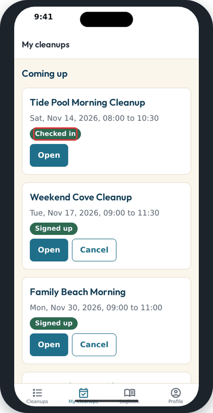

🔎 Lesson 8.4: Performance and Debugging
"It feels slow" and "it broke" are the two reports every app gets. Neither tells you what to change. Today you learn to turn both into numbers and facts: what the phone's tools can show you, how many times a screen really draws, what the React Compiler is already doing for you, what the app carries in its bundle and why, and a calm, repeatable method for hunting a bug that ends with a test that keeps it dead.
🎯 Learning Objectives
By the end of this lesson, you will be able to:
- Open React Native DevTools with j, find the Expo CLI's dev tools menu, and say which tool answers which question on a phone and in the web preview
- Explain why a component renders, measure renders with React DevTools' Profiler, and decide from numbers whether memoization is needed with the React Compiler on
- Describe the JS thread and the UI thread, frames, release versus development builds, and the common causes of memory leaks in a React Native app
- Measure what the app's bundle carries with
npx expo exportand Expo Atlas, and shrink it where the numbers say it pays - Debug with a method: reproduce, read the error, narrow it down, fix, and add a test that fails without the fix
📦 Code for this lesson
Starting code: lesson-31-start.zip · Finished code: lesson-31-end.zip. Each folder has a README with the commands to run it.
In This Lesson
👋 Welcome: Measure, Then Fix
At the end of Lesson 8.3 you scrolled the Cleanups list fast on your phone and wrote down anything that felt slow or jumpy. Keep that note next to you. This lesson is about turning notes like it into something you can act on, and about the other kind of report: "I checked in, and my cleanup disappeared."
The web course gave you the habits: React DevTools, the Profiler, the browser's Network tab, the React Compiler (Lesson 5.3 there). On a phone, the questions are the same and the tools are new: there is no browser window around your app, the JavaScript runs in Hermes on the phone, the drawing happens on a different thread, and what you ship is a compiled bundle inside an app, not files on a server. By the end of this lesson:
- You know the toolbox: what j and Shift+M open in the Expo CLI, and what each tool can and cannot tell you.
- You have numbers for Shoreline Crew: how many components draw when a volunteer types in Search, with the React Compiler on and off, and what each package costs in the bundle.
- The bundle is smaller, because the numbers pointed at things the app carries but never uses.
- A real bug is fixed with a method, and a test makes sure it never comes back.
Why it matters for your work: "make it faster" is one of the most common requests a mobile developer gets, and the most common mistake is to change code before measuring. Teams trust the developer who says "Search costs 3 milliseconds per keystroke; the jank is in the images" over the one who wraps everything in useMemo and hopes. And volunteers on a beach with an old phone and one bar of signal feel every extra megabyte and every dropped frame.
🌱 Slow and broken are information
A bug report is not a verdict on you; it is the app telling you where your picture of it is wrong. The developers who seem calm in front of a red screen are not smarter; they have a method, and they read the error before they guess. You will practice exactly that today, on a bug that has been hiding in Shoreline Crew since Lesson 6.3.
🧰 The Debugging Toolbox
Start npx expo start and look at the key list it prints. Two keys open the tools of this lesson: j "open debugger", and Shift+M "more tools".
j: React Native DevTools
Pressing j opens React Native DevTools, a debugger built on Chrome's DevTools that connects to the JavaScript running in Hermes on your phone (or emulator). It needs an app that runs Hermes and is connected to Metro: Expo Go and development builds both do. With only the web preview open, there is nothing to connect to, and the terminal says so:
Expected output
...
› Press j │ open debugger
...
Logs for your project will appear below. Press Ctrl+C to exit.
Debug: No compatible apps connected, React Native DevTools can only be used with Hermes. Learn more: https://docs.expo.dev/guides/using-hermes/The web preview runs in your browser's JavaScript engine, not Hermes. For it, you use the browser's own DevTools (F12, or Ctrl+Shift+I; ⌘ Cmd+⌥ Option+I on a Mac) plus the React Developer Tools browser extension, the same pair you used for the HQ.
According to React Native's documentation, React Native DevTools gives you, for the app on the phone:
| Panel | Answers |
|---|---|
| Console | What did the app log, and what does this value hold right now? (Logs also appear in the terminal running Metro.) |
| Sources | Breakpoints and stepping through your TypeScript, thanks to source maps; a debugger; statement pauses there too |
| ⚛️ Components | The component tree, props, state and hooks of the running app; React Developer Tools, built in |
| ⚛️ Profiler | Record an interaction and see each commit: which components rendered, how long they took, and (with a setting) why |
| Memory | Heap snapshots of the JavaScript side, to compare before and after an action |
| Network and Performance | Requests the app makes, and a timeline of the JavaScript thread; recent React Native versions added both: check what your version shows |
Shift+M: more tools
The second key opens a menu of developer tools that act on the connected phone. In Shoreline Crew it lists:
Expected output
...
? Dev tools (native only) › - Use arrow-keys. Return to submit.
❯ Inspect elements
Toggle performance monitor
Toggle developer menu
Reload app
Open expo-sqlite
Open expo-atlas- Inspect elements: tap anything on the phone's screen to see its component, its styles and its size (the element inspector from Lesson 1.2's developer menu).
- Toggle performance monitor: a small overlay on the phone with the frame rates of the UI thread and the JavaScript thread (on some platforms, memory use too). The next section explains why there are two.
- Open expo-sqlite: a plugin that ships with expo-sqlite to browse the phone's database (Lesson 5.3's logbook).
- Open expo-atlas: Expo Atlas, the bundle explorer, which appears once it is installed (Step 3) and Metro was started with
EXPO_ATLAS=true.
📱 On your phone
With Shoreline Crew open in Expo Go, press j: a DevTools window should open on your computer, connected to the phone. In the Console panel, type 1 + 1 to see it answer from the phone. Then press Shift+M and choose Toggle performance monitor: the overlay should appear on the phone. If more than one app is connected (a phone and an emulator), the CLI asks which one to debug. The course's machine has no phone or emulator attached, so the DevTools window itself is described from React Native's and Expo's documentation; the two terminal outputs above are real.
💡 Mental model: the radio relay, both ways
Lesson 1.1 called JSI the radio relay between JavaScript and the phone's native side. React Native DevTools is a second relay, between the phone and your computer: it listens to Hermes and reports what the JavaScript is doing, and it can tell Hermes to stop at a breakpoint. It hears the JavaScript side clearly. It hears the native side (drawing, the camera, the keyboard) only through what JavaScript sees of it. When a problem is in the native drawing, the performance monitor's UI frame rate and the platform's own profilers are the tools, not the Console.
🔁 Why a Screen Renders, and What the Compiler Does
The rules are React's, the same as in the HQ. A component renders again when:
- its state changes (
useState,useReducer); - its parent renders and passes it a new element, even with equal props, unless something stops it;
- a context it reads changes;
- a store or hook it subscribes to reports a change: in Shoreline Crew, TanStack Query (a query's data or status), Zustand (a selector's result, which is why Lesson 5.5 used
useShallow),useWindowDimensions()(turning the phone, changing the text size),useSession().
A render is not a redraw of pixels: React calls your function, compares the result, and sends only the differences to the native views. A render you did not need still costs JavaScript time, and on a phone, that time comes out of a frame.
The React Compiler is already on
Lesson 1.2's tour of app.json showed two experiments the template switched on. One of them is the compiler:
"experiments": {
"typedRoutes": true,
"reactCompiler": true
}As in Lesson 5.3 of the web course, the compiler rewrites your components and hooks at build time so they remember what they computed and the elements they returned, and reuse them while the inputs are the same. It is what useMemo, useCallback and memo did by hand, applied everywhere it can prove it is safe. Three Expo details, read in babel-preset-expo for SDK 58:
- The compiler (babel-plugin-react-compiler 1.0) runs on your code only, never on
node_modules: libraries arrive already built. - Every bundle says it is on: "React Compiler enabled" in the output of
npx expo startandnpx expo export(Step 3 shows it). - A component can opt out with the directive
'use no memo'as its first line, for the rare case where the compiler's memory gets in the way. Shoreline Crew does not need it.
The compiler also explains some earlier lint errors: Lesson 7.1's "This value cannot be modified" for sv.value = … came from the compiler's rules in eslint-config-expo. Following the Rules of React is what lets the compiler work.
What it buys: Shoreline Crew's numbers
For this lesson, the Cleanups screen was measured in the web preview (development mode, Chromium on a desktop computer) while typing otter into Search, one letter at a time, with the compiler on and then off ("reactCompiler": false and npx expo start --clear). React DevTools' Profiler shows the same kind of numbers per commit:
| One letter typed in Search | Compiler on (the template's setting) | Compiler off |
|---|---|---|
| React commits | 2 to 3 (8 when the list changes shape) | 2 to 3 (9) |
| Components rendered | about 46 to 62 (222) | about 262 to 531 (640) |
| Render time, all commits | about 3 to 4 ms (12 ms) | about 10 to 21 ms (25 ms) |
With the compiler on, a keystroke re-renders the screen, the search field, the list and the few cards whose data changed. With it off, every card re-renders every AppText, Icon and Detail inside it, five times as much work for the same result. At 60 frames per second a frame has 16.7 milliseconds; on a desktop the difference is invisible, on a five-year-old phone it is the difference between a smooth field and a field that lags behind the thumb. The numbers on your phone will differ: that is why you measure there too.
So, memo only where measured
With the compiler on, the rule from the web course becomes simpler: do not add useMemo, useCallback or memo by default. Shoreline Crew has two useCallbacks, and both are there because an API asks for a stable function (useFocusEffect), not for speed. Reach for manual memoization only when a measurement shows a component the compiler did not help, and then check the measurement again after the change. Two cases where that can happen:
- The compiler skipped a component. It does not compile code it cannot prove safe or does not support yet; the app still works, without the memory. In Shoreline Crew it skips two:
ConnectionCheck(atrywithfinally) andShareLogbook(a conditional insidetry/catch). Both render a handful of times, at a button press, so the measured answer is: leave them. React Developer Tools marks compiled components with a "Memo ✨" badge, so the ones without it are easy to spot. - The work is outside React. A function that does something heavy on every call (sorting thousands of rows, parsing a big file) is still heavy when React calls it less often. Move it off the render path or make it cheaper; memoization only hides it.
💡 Mental model: the tide gauge before the seawall
A town does not build a seawall because the beach "looks high today"; it reads the tide gauge for a season first, and then builds where the water actually comes over. Optimizing without a measurement is building seawalls by feel: expensive, in the wrong place, and sometimes it makes the next storm worse (stale values from a wrong dependency list are a classic). Measure, change one thing, measure again.
⏱️ Frames, Threads and Memory
A phone redraws its screen 60 times a second, many newer ones 120. Each frame has 16.7 ms (or 8.3 ms) for everything. React Native splits the work between two threads that matter to you:
| Thread | Does | When it is busy, you see |
|---|---|---|
| JavaScript thread (Hermes) | Your components, hooks, Query, Zustand, event handlers, fetch callbacks | Taps that answer late, a text field that lags, a list that shows blank rows while scrolling fast |
| UI thread (main thread) | Native views: layout, drawing, scrolling, native animations, Reanimated worklets (Lesson 7.1) | Stuttering scroll and animations, even when JavaScript is idle |
The performance monitor shows one frame rate for each. If the JS number drops while you scroll the Cleanups list, the list is waiting for JavaScript to render rows (look at what the rows do on every render); if the UI number drops, the native side is struggling (big images being decoded, too many views, heavy shadows). That split is why Lesson 7.1 ran animations as worklets on the UI thread: they keep moving while JavaScript is busy.
Measure the build your volunteers get
What runs in Expo Go during development is slower than what volunteers will install: development mode adds checks and warnings, and the JavaScript arrives from Metro as source code, not compiled bytecode. So:
- Use development mode to find what is slow (render counts, which component, which request).
- Judge how slow in production mode:
npx expo start --no-dev --minifyruns production JavaScript in Expo Go, and a preview or production build (Module 9) is the real thing. - Try the oldest, cheapest phone you can borrow. Volunteers are not all on this year's flagship.
For deeper profiling, React Native DevTools can record a JavaScript CPU profile of Hermes (a flame chart of which functions ran), and the platforms have their own profilers for the native side: Android Studio's profiler and Xcode's Instruments, both working on a build of your app rather than Expo Go. This course does not need them; know they exist for the day a number does not explain itself.
Memory: what leaks in a phone app
A phone gives each app far less memory than a desktop browser tab, and the system may close an app in the background that uses a lot. Leaks in React Native apps usually come from things that outlive the screen that started them:
- Listeners never removed.
AppState,NetInfo,Dimensions, notification responses,AccessibilityInfo: every subscription needs itsremove()in the effect's cleanup. Shoreline Crew's hooks (useAppStateFocus,useReminderTaps, the motion setting) all return one; that is the pattern to keep. - Timers and intervals that keep running after the screen closes.
- Big things kept forever: whole photos in state, a cache that only grows. Lesson 6.2 kept photos as files and only their addresses in the queue, and deleted the files after upload, for this reason.
- Images decoded at full size. A 4000-pixel photo shown 100 points wide still costs its full size in memory unless something resizes it; expo-image scales and caches for you, which is one reason the course uses it.
To check: the performance monitor's memory number while you open and close a screen many times (it should come back down), or React Native DevTools' Memory panel, taking a heap snapshot before and after and comparing them.
⚠️ The web preview is not a phone
Render counts measured in the web preview are honest about React: same components, same compiler, same rules. Times are not: a desktop browser is many times faster than a phone, and react-native-web draws with the browser, not native views. Use the web preview to count and compare; use a phone to judge.
📦 What the App Carries: Bundle and Startup
Every Shoreline Crew check since Lesson 1.2 has run npx expo export for Android and iOS. The file it writes is the app's JavaScript as Hermes bytecode (.hbc): compiled ahead of time, so the phone does not parse JavaScript at startup. It has grown with the app: about 2.8 MB for the first proof app, 5.9 MB on Android at the start of this lesson. Most of that is not your code.
Measured for this lesson from the Android export's source map (each minified byte charged to the package it came from; the minified JavaScript was 3.93 MB before Hermes compiled it):
| Package | Minified size | Share | Why it is there |
|---|---|---|---|
| react-native-reanimated | 640 KB | 16% | Tallies, swipe, layout animations (Module 7) |
| react-native | 612 KB | 16% | The framework itself |
| zod | 506 KB | 13% | Form checks (Lesson 5.4); 275 KB of it are error messages in more than 40 languages |
| expo-router | 471 KB | 12% | Navigation, including its copy of React Navigation |
| react-native-gesture-handler | 177 KB | 5% | Swipe to remove (Lesson 7.2) |
Shoreline Crew's own src/ | 140 KB | 4% | Everything you wrote in 30 lessons |
| @expo/ui | 78 KB | 2% | Nothing: a template package Expo Router loads on Android if it is installed |
Two rows stand out. Zod's languages: Shoreline Crew writes every message itself, in English, so 275 KB of messages in other languages are never shown. @expo/ui: a package the template installed for native UI components; the app never uses it, but Expo Router loads it on Android whenever it is installed. You remove both in Step 4, and the table's tool, Expo Atlas, is how you find rows like these yourself:

locales folder: messages in dozens of languages the app never shows. Atlas sizes the modules before minification, so its total is larger than the file the export writes.Not every byte is JavaScript
The export also lists assets: fonts and images the app ships next to the bundle. The largest in Shoreline Crew is the Material Symbols icon font (976 KB), which expo-symbols uses for icons on Android and the web. And the app you install from a store is much bigger than its bundle: the native code of React Native, Hermes and every native module, plus icons and splash images. Module 9 builds that app.
💡 Mental model: the field kit
Lesson 1.1's field kit is the native code a build carries. Expo Go is a kit packed by Expo, with every SDK module inside, whatever you use. Your own build (Module 9) packs the modules your project installs. A package in package.json that nothing uses is a tool in the kit nobody takes out: it makes the bag heavier on every trip. So the cleanup has two halves: unused JavaScript makes the bundle bigger now; unused native modules make your own app bigger later.
Startup, in order
When a volunteer taps the icon: the native app starts, Hermes loads the bytecode (fast: no parsing), the bundle's modules run their top-level code (2,238 modules on Android at the start of this lesson), the root layout holds the splash screen while it loads fonts, the saved session, settings and the queue (Lessons 2.3 to 5.5), and only then does the first screen render and ask the API for cleanups. Every module you remove is one less to run; every await behind the splash is time the volunteer stares at a logo. When startup feels slow, measure each of those steps in a production build before guessing which one it is.
🧩 Version note: tree shaking is still experimental
Web bundlers remove unused exports ("tree shaking"). Metro, React Native's bundler, includes every module that is imported, whole. Expo SDK 58 has an experimental tree-shaking mode behind two EXPO_UNSTABLE_ environment variables; measured on Shoreline Crew, it shrank the Android JavaScript only from 3.93 to 3.8 MB and kept Zod's languages, because import { z } from 'zod' uses the whole z object. So the course trims by hand, where the numbers point.
🐞 The Debugging Method
Bugs that crash with a red screen are the easy ones: the error names a file and a line. The hard ones are quiet: the app does something reasonable-looking that is wrong. For both, the same five steps work, and they work best in order:
- Reproduce it. Find the exact steps that show the bug every time: which account, which screen, which data, online or offline, which phone. A bug you cannot reproduce, you cannot know you fixed. The best reproduction is a failing test, because it repeats the steps for you in a second.
- Read the error. All of it, slowly: the message, then the stack from the top. On a red screen, in Metro's terminal, in Jest: the stack is a path through your imports and calls, and the first line that is your file is usually where to look. No error at all is information too: the code did what it was told, so the question becomes what it was told.
- Narrow it down. Split the path the data takes in half and check the middle. For a screen showing the wrong thing: did the API answer the right thing (DevTools' Network panel, or the browser's for the web preview)? Did the cache hold it (React DevTools shows the hook's data)? Did the screen's own logic keep it? Each check halves where the bug can be. When something "worked last week", the same idea applied to history is
git bisect: Git checks out the commit halfway between a good one and a bad one, you test, and it halves again. - Fix one thing. The smallest change that explains the bug. If you change three things and it works, you do not know which one fixed it, or what the other two broke.
- Keep a test that failed before the fix and passes after. That is how you know the test is about this bug, and it fails the day someone brings the bug back.
In Step 5 you use all five on a bug a volunteer would report: "I checked in at today's cleanup, and it vanished from My cleanups." (If you did Exercise 2 in Lesson 6.3, you fixed it there already: today you add the part that was missing, the test, and practice the method on a bug you know.)
⚠️ Common Mistakes
Each output below is what the terminal printed, on a copy of the project broken on purpose.
⚠️ Pressing j with only the web preview open
The terminal answers Debug: No compatible apps connected, React Native DevTools can only be used with Hermes. (the whole output is in "The Debugging Toolbox"). Nothing is broken: React Native DevTools debugs an app running Hermes, such as Expo Go on your phone, and the web preview runs in the browser's engine. Open the app on the phone first, or use the browser's DevTools for the web preview.
⚠️ Removing a package your code still imports
"Unused" means nothing imports it: not your code, not a library. Remove a package something still imports, and the type check tells you at once (here, a component that used @expo/ui, after Step 4 removed it):
Expected output
src/components/Toolbar.tsx:1:22 - error TS2307: Cannot find module '@expo/ui/jetpack-compose' or its corresponding type declarations.
1 import { Host } from '@expo/ui/jetpack-compose';
~~~~~~~~~~~~~~~~~~~~~~~~~~
Found 1 error in src/components/Toolbar.tsx:1Metro fails the same way when it bundles ("Unable to resolve module"). Before removing a package, search your src folder for its name and run npm ls with its name, which shows every package that depends on it (Step 4). If a library needs it, it stays.
⚠️ Judging speed in the wrong place
Development mode in Expo Go, and the web preview on a fast computer, are both the wrong place to decide whether something is fast enough. Development mode is slower than a release build (extra checks, JavaScript instead of bytecode); a desktop browser is far faster than a phone. Count renders anywhere; time them in production mode (npx expo start --no-dev --minify, or a build) on a real, preferably modest, phone.
⚠️ A screen test that loads more than the screen
A test imports a screen; the screen imports its mutations; the mutations import the reminders; the reminders import expo-notifications, which cannot load in Jest (Lesson 8.2). The test file fails before any test runs:
Expected output
FAIL src/test/screens/my-cleanups.test.tsx
● Test suite failed to run
TypeError: handleSubscription.remove is not a function
...
at Object.remove (node_modules/expo-notifications/build/NotificationsHandler.ts:94:24)
at Object.setNotificationHandler (src/notifications/reminders.ts:29:17)
at Object.require (src/api/mutations.ts:7:1)
at Object.require (~/shoreline/shoreline-crew/src/app/(tabs)../../../../../../../my-cleanups.tsx:6:1)
at Object.require (src/test/screens/my-cleanups.test.tsx:6:1)
Test Suites: 1 failed, 1 total
Tests: 0 totalRead the stack from the bottom up and it is the chain of imports: the test file, my-cleanups.tsx (Jest prints the (tabs) folder's path oddly), mutations.ts, reminders.ts. The fix is a stand-in for your module at the edge of what the test is about: jest.mock('@/notifications/reminders', () => ({ updateReminders: jest.fn() })), with a factory, because an automatic mock would load the real module to copy its shape (Lesson 8.2).
🛠️ Project: Measure, Trim and Fix Shoreline Crew
You open the toolbox on your phone, count renders in the web preview, measure the bundle with Expo Atlas, remove what the numbers show the app does not need, and then hunt one real bug with the method. Start shoreline-api in one terminal (node server.ts, or with --host for your phone, as in Lesson 5.1) and npx expo start in another.
Step 1: Open the toolbox (10 min)
Open Shoreline Crew on your phone in Expo Go. In the terminal running Metro:
- Press j. In the DevTools window, open the Console and type
1 + 1, then open the ⚛️ Components panel and findEventCardin the tree. - Press Shift+M, choose Toggle performance monitor, and scroll the Cleanups list fast to the end, the same test as your note from Lesson 8.3. Watch both frame rates. Write down the lowest JS and UI numbers you see.
- Choose Inspect elements from the same menu, tap a card's title, and read its size and styles.
Then press w for the web preview. If your browser does not have the React Developer Tools extension yet (you used it for the HQ), install it from your browser's extension store, reload the page, and open DevTools: you should find the ⚛️ Components and ⚛️ Profiler tabs.
No phone at hand? Do the web half now, and the phone half when you can: Step 2 works entirely in the web preview.
Step 2: Count renders, with and without the compiler (20 min)
In the web preview's DevTools, open ⚛️ Profiler. In its settings (the gear), turn on Record why each component rendered while profiling; in the Components tab's settings, turn on Highlight updates when components render. Then:
- On the Cleanups screen, press record, type
otterinto Search one letter at a time, and stop. - Step through the commits. For a letter in the middle of the word, count the components that rendered and note the total render time. Click
EventCardto see why it rendered. - In the Components tab, look for the "Memo ✨" badge next to components: those are the ones the compiler optimized.
Now the experiment. In app.json, change "reactCompiler": true to false, stop Metro (Ctrl+C) and start it again with a clean cache, so every file is transformed again:
npx expo start --clearRecord the same five letters. Compare with "What it buys" above: your numbers will differ from the lesson's, but the difference between the two runs should look similar, several times more components on every keystroke with the compiler off. Then put "reactCompiler": true back and restart with --clear again. Check that the start-up output says React Compiler enabled before you go on.
If you have your phone connected, repeat the "on" recording in React Native DevTools' ⚛️ Profiler (j). The number of components per keystroke should be about the same; the milliseconds are the phone's own.
Step 3: See what the bundle carries with Expo Atlas (15 min)
Expo Atlas reads a bundle as Metro builds it and draws what each package costs. Install it as a development tool (it never ships in the app):
npx expo install --dev expo-atlasExpected output (the start)
env: load .env.local
env: export EXPO_PUBLIC_API_URL
› Installing 1 other package using npm
> npm install --save-dev expo-atlas
up to date, audited 1424 packages in 3sYours says "added" packages instead of "up to date". Now export the Android bundle with Atlas switched on. An environment variable in front of a command works in macOS, Linux and WSL terminals:
EXPO_ATLAS=true npx expo export --platform androidIn Windows PowerShell, set the variable first, and remove it afterwards:
$env:EXPO_ATLAS = "true"
npx expo export --platform android
Remove-Item Env:EXPO_ATLASExpected output (trimmed: the asset list in the middle is long)
env: load .env.local
env: export EXPO_PUBLIC_API_URL
Using src/app as the root directory for Expo Router.
React Compiler enabled
Starting Metro Bundler
Android Bundled 13005ms node_modules/expo-router/entry.js (2238 modules)
...
› android bundles (1):
_expo/static/js/android/entry-6d5dd88018515dfe26f7b81345ad9128.hbc (5.9MB)
› Files (1):
metadata.json (2KB)
Exported: distNote the module count (2238) and the bundle size (5.9 MB): those are your "before" numbers. Atlas wrote what it saw to .expo/atlas.jsonl (the .expo folder is already in .gitignore). Open it:
npx expo-atlasIt prints the address where Atlas is ready and opens it in your browser: the treemap from "What the App Carries". Click zod, then v4, then locales: one box per language. Hover over @expo/ui to see its size and path. Press Ctrl+C in the terminal when you are done. (With Atlas installed, EXPO_ATLAS=true npx expo start also adds Open expo-atlas to the Shift+M menu, to look at the development bundle while you work.)
Step 4: Carry less (20 min)
First, the template packages. Search src in VS Code (Ctrl+Shift+F, ⌘ Cmd+Shift+F on a Mac) for expo-device, expo-web-browser, @expo/ui and expo-glass-effect: none of them is used by your code. Then ask npm who depends on them:
npm ls expo-glass-effect expo-device expo-web-browser @expo/uiExpected output
...
├── @expo/ui@58.0.28
├── expo-device@58.0.5
├── expo-glass-effect@58.0.5
├─┬ expo-router@58.0.31
│ ├── @expo/ui@58.0.28 deduped
│ └── expo-glass-effect@58.0.5 deduped
└── expo-web-browser@58.0.8Expo Router uses two of them. expo-glass-effect it needs, so it stays. @expo/ui is optional for Expo Router (only its Android toolbar uses it, which Shoreline Crew does not), and nothing else uses expo-device or expo-web-browser. Remove those three:
npm uninstall @expo/ui expo-device expo-web-browserExpected output (the first line)
removed 4 packages, and audited 1408 packages in 2s
...Then Zod's languages. Metro has no way to drop part of a package, but it lets you decide what an import resolves to. Replace metro.config.js with:
// Metro, the bundler, with two additions: expo-sqlite runs in the web preview as a WebAssembly
// file (.wasm), and Metro only bundles the file types it has been told about; and Zod's error
// messages in other languages stay out of the app (Lesson 8.4 measured them)
const { getDefaultConfig } = require('expo/metro-config');
const config = getDefaultConfig(__dirname);
config.resolver.assetExts.push('wasm');
// Zod 4 brings its messages in more than 40 languages, about 275 KB of the Android bundle.
// Shoreline Crew writes its own messages, so the list of languages is resolved to an empty module.
const zodLanguages = /[\\/]zod[\\/]v4[\\/]locales[\\/]index\.js$/;
config.resolver.resolveRequest = (context, moduleName, platform) => {
const resolution = context.resolveRequest(context, moduleName, platform);
if (resolution.type === 'sourceFile' && zodLanguages.test(resolution.filePath)) {
return { type: 'empty' };
}
return resolution;
};
module.exports = config;resolveRequestruns for every import Metro resolves. It asks Metro's own resolver first (context.resolveRequest), so nothing else changes.- When the answer is Zod's list of languages, it returns
{ type: 'empty' }: Metro's way to say "this module is empty". Zod's English messages live in their own file and stay, and every message Shoreline Crew shows is its own anyway (Lesson 5.4's schemas). - The pattern accepts
/and\, so it also matches Windows paths. If a future Zod moves the file, the pattern simply stops matching and the bundle grows back: nothing breaks, and the next measurement shows it.
Metro reads its config at start, so export again with a clean cache, and run the iOS export too:
npx expo export --platform android --clear
npx expo export --platform iosExpected output (Android, trimmed)
Android Bundled 19343ms node_modules/expo-router/entry.js (2084 modules)
...
› android bundles (1):
_expo/static/js/android/entry-a0fc6b8a5faced8847b7291067d2d3bd.hbc (5.5MB)Expected output (iOS, trimmed)
...
› ios bundles (1):
_expo/static/js/ios/entry-a72cb01c8306fa1b0305c6155b1eee3d.hbc (5.4MB)Compare with your "before" numbers. Measured for this lesson, in bytes:
| Bundle | Start | Three packages removed | And Zod's languages |
|---|---|---|---|
Android (.hbc) | 5,885,261 | 5,755,941 | 5,512,051 (6.3% smaller) |
iOS (.hbc) | 5,671,712 | 5,671,712 (no change) | 5,428,303 (4.3% smaller) |
| Android modules | 2,238 | 2,084 |
The iOS bundle did not change when @expo/ui went, because Expo Router only loads it on Android: a reminder to measure each platform, not assume. Finally, make sure nothing depended on what you removed:
npx tsc --noEmit
npx expo lint
npm test -- --watchAll=falseAll three should pass as before (45 tests). In the web preview, open the sign-in screen and press Sign in with empty fields: "Enter an email address." should still appear, from Shoreline Crew's own schema.
Step 5: The vanished cleanup, debugged with the method (25 min)
The report: "I checked in at the Tide Pool cleanup this morning, and now it's gone from My cleanups. Did my check-in fail?"
1. Reproduce it. In the web preview (or on your phone), sign in as Theo (theo.nakamura@example.com, shoreline-demo), open My cleanups and note that Tide Pool Morning Cleanup, today's cleanup, is listed. Open it, press Check in, enter 6544 (the sample data's code for today, from Lesson 6.3), check in, press Done, and open My cleanups again. The cleanup is gone. It happens every time, so now make the reproduction automatic. Create src/test/screens/my-cleanups.test.tsx, with one test for what already works and one for the report:
import { screen } from '@testing-library/react-native';
import { Stack } from 'expo-router';
import { checkIn, setSession } from '@/api/client';
import { queryClient } from '@/api/queries';
import MyCleanupsScreen from '@/app/(tabs)/my-cleanups';
import { volunteer } from '@/test/factories';
import { renderScreens } from '@/test/render';
import { startMockApi } from '@/test/server';
// The screen's mutations update reminders, and expo-notifications cannot load in Jest (Lesson 8.2)
jest.mock('@/notifications/reminders', () => ({ updateReminders: jest.fn() }));
startMockApi();
beforeEach(() => setSession(volunteer)); // Theo, who has a spot at today's cleanup (e17)
afterEach(() => queryClient.clear());
function showMyCleanups() {
return renderScreens({ _layout: () => <Stack />, index: MyCleanupsScreen });
}
it('lists the cleanups Theo signed up for, each with a Cancel button', async () => {
await showMyCleanups();
expect(await screen.findByText('Tide Pool Morning Cleanup')).toBeOnTheScreen();
expect(
screen.getByRole('button', { name: 'Cancel my sign-up for Tide Pool Morning Cleanup' }),
).toBeOnTheScreen();
});
// The bug a volunteer reported: "I checked in, and my cleanup vanished from My cleanups"
it("keeps today's cleanup after check-in, marked Checked in, with nothing to cancel", async () => {
await checkIn('e17', '6544'); // the code the organizer reads out at today's cleanup
await showMyCleanups();
expect(await screen.findByText('Tide Pool Morning Cleanup')).toBeOnTheScreen();
expect(screen.getByText('Checked in')).toBeOnTheScreen();
expect(
screen.queryByRole('button', { name: 'Cancel my sign-up for Tide Pool Morning Cleanup' }),
).toBeNull();
});- The setup is Lesson 8.3's: the mock API per file, a signed-in volunteer, the app's cache cleared after each test, a stack with the real screen.
- The second test checks in through the app's own client (
checkInfrom Lesson 6.3), against the same mock API, before the screen opens: the same data a volunteer has after checking in. - The
jest.mock()line is there because of the first error you are about to meet. Leave it out for the first run.
2. Read the error. Without the jest.mock() line, run the file:
npm test -- --watchAll=false src/test/screens/my-cleanups.test.tsxThe file does not even run: it fails with TypeError: handleSubscription.remove is not a function, the import chain from Common Mistakes. That is not the bug; it is the test's setup telling you the screen pulls in the notifications module. Reading the stack (test, screen, mutations.ts, reminders.ts) gives the fix: add the jest.mock() line with its comment, and run again:
Expected output (trimmed: RNTL prints the whole screen)
FAIL src/test/screens/my-cleanups.test.tsx
✓ lists the cleanups Theo signed up for, each with a Cancel button (116 ms)
✕ keeps today's cleanup after check-in, marked Checked in, with nothing to cancel (33 ms)
● keeps today's cleanup after check-in, marked Checked in, with nothing to cancel
Unable to find an element with text: Tide Pool Morning Cleanup
<RNCSafeAreaProvider>
...
<RCTScrollView>
<View>
<Text
accessibilityRole="header"
>
Coming up
</Text>
<View>
<Text>
Weekend Cove Cleanup
</Text>
...
Test Suites: 1 failed, 1 total
Tests: 1 failed, 1 passed, 2 totalNow the test fails for the right reason, the volunteer's reason: the first test passes, and after a check-in the list starts with Weekend Cove Cleanup. A failing test that matches the report is the best reproduction you can have.
3. Narrow it down. The data's path is: API, then the cache, then the screen's own logic, then what it draws. Check the middle first. In the web preview's Network tab (or React Native DevTools' Network panel on the phone), find the request to /api/me/signups after the check-in: Tide Pool Morning Cleanup is still there, with "status": "attended". So the API and the cache are fine, and the bug is in the screen. Open src/app/(tabs)/my-cleanups.tsx and read what it keeps: comingUp keeps only confirmed and waitlisted sign-ups. An attended sign-up is filtered out, even on the day of the cleanup. Found, without a single console.log.
4. Fix one thing. Keep today's cleanup once you have checked in, show it as checked in, and offer no Cancel for it (SignupPanel's rule since Lesson 6.3):
const today = toDateString(new Date());
- // Spots you hold or wait for, soonest first (the API lists the latest cleanup first)
+ // Spots you hold or wait for, soonest first (the API lists the latest cleanup first), and
+ // today's cleanup once you have checked in: it is still going on
const comingUp = signups.data
- .filter(({ status }) => status === 'confirmed' || status === 'waitlisted')
- .filter(({ event }) => event.date >= today)
+ .filter(
+ ({ status, event }) =>
+ ((status === 'confirmed' || status === 'waitlisted') && event.date >= today) ||
+ (status === 'attended' && event.date === today),
+ )
.reverse();
// ...
<View style={styles.row}>
- {signup.status === 'confirmed' ? (
+ {signup.status === 'attended' ? (
+ <Badge label="Checked in" tone="success" />
+ ) : signup.status === 'confirmed' ? (
<Badge label="Signed up" tone="success" />
// ...
</Link>
- <Button
- label={cancelling ? 'Cancelling…' : 'Cancel'}
- accessibilityLabel={`Cancel my sign-up for ${event.title}`}
- disabled={cancel.isPending}
- onPress={() => cancel.mutate(signup.id)}
- />
+ {/* Checked in: there is nothing left to cancel (the same rule as SignupPanel) */}
+ {signup.status !== 'attended' && (
+ <Button
+ label={cancelling ? 'Cancelling…' : 'Cancel'}
+ accessibilityLabel={`Cancel my sign-up for ${event.title}`}
+ disabled={cancel.isPending}
+ onPress={() => cancel.mutate(signup.id)}
+ />
+ )}
</View>Without the badge change, an attended sign-up would fall into the "Waiting list" branch, so the fix is the filter and the two places that read the status. "You have helped at N cleanups" already counted it.
5. Keep the test. Run the file again:
Expected output
PASS src/test/screens/my-cleanups.test.tsx
✓ lists the cleanups Theo signed up for, each with a Cancel button (112 ms)
✓ keeps today's cleanup after check-in, marked Checked in, with nothing to cancel (30 ms)
Test Suites: 1 passed, 1 total
Tests: 2 passed, 2 total
Snapshots: 0 total
Time: 1.337 s, estimated 2 s
Ran all test suites matching src/test/screens/my-cleanups.test.tsx.The test failed without the fix and passes with it: it is a test of this bug. Check the result by hand once too, with the same steps as in 1:

Step 6: The whole suite, and what you measured (10 min)
npm test -- --watchAll=false
npx tsc --noEmit
npx expo lintExpected output (the end of the tests)
...
Test Suites: 15 passed, 15 total
Tests: 47 passed, 47 total
Snapshots: 0 total
Time: 2.538 s
Ran all test suites.Then write down your numbers in the project's notes (a PERFORMANCE.md, or your journal): renders per keystroke with the compiler on and off, the frame rates from your phone in Step 1, and the bundle sizes before and after Step 4. Numbers you wrote down are the "before" of the next performance question, and they turn "it feels slower since the update" into something you can check.
One more measurement trick for the road: when a release build reports an error, its stack trace points into compiled bytecode, not your files. Exporting with --source-maps writes the map that translates it back (crash-reporting services use it; Lesson 9.3):
npx expo export --platform android --source-mapsExpected output (trimmed)
...
› android bundles (2):
_expo/static/js/android/entry-a0fc6b8a5faced8847b7291067d2d3bd.hbc (4.5MB)
_expo/static/js/android/entry-a0fc6b8a5faced8847b7291067d2d3bd.hbc.map (11MB)The bytecode is smaller here (4.5 MB) because Hermes moves its own debugging information into the .map file when you ask for one. Compare bundles exported the same way, or the comparison lies.
✅ Project Completion Checklist
- You opened React Native DevTools with j and the performance monitor from Shift+M (on a phone), or know what each shows
- You recorded renders while typing in Search with the compiler on and off, and
app.jsonhas"reactCompiler": trueagain expo-atlasis a dev dependency, and you found zod'slocalesand@expo/uiin Atlas's treemap@expo/ui,expo-deviceandexpo-web-browserare gone,metro.config.jsleaves out Zod's languages, and the Android export reports 2084 modules and 5.5 MB- My cleanups keeps today's cleanup after check-in with a Checked in badge and no Cancel, and
my-cleanups.test.tsxfails without the fix and passes with it npm test -- --watchAll=falsepasses 47 tests;npx tsc --noEmitandnpx expo lintpass- Your own app: list the three packages your final-project idea would need most, and for each, one way you would measure what it costs (Atlas, the Profiler, the performance monitor)
🏋️ Hands-on Exercises
Optional, but recommended: each takes ten to twenty minutes. The next lesson starts from the project as Step 6 left it.
🏋️ Exercise 1: How much do the tallies cost?
Lesson 7.1's tallies count up with React rendering once per step. Measure it: in the web preview, sign in as Theo, open the Logbook, start recording in the Profiler, press Bring in my sent logs, and stop when the numbers have settled. How many commits, how many times did Tally render, and how long did each commit take? Is it worth changing?
💡 Hint
The sample log has 42 pieces and 2.5 kg: one step per piece and one per tenth of a kilogram. Compare the time per commit with a frame's 16.7 ms.
✅ Solution
Measured for this lesson (web preview, development mode): 38 commits during the count, 71 renders of Tally across the four tallies, about 70 ms of render time in all, so roughly 2 ms per commit. Each commit is far inside a frame, the count lasts under a second, and Reanimated moves the numbers' bounce on the UI thread. The answer is to leave it: Lesson 7.1 already limited the renders to one per visible step, and a screen reader hears only the final number. If a phone's performance monitor showed the JS frame rate dropping during the count, the next step would be to animate the text on the UI thread instead (Lesson 7.1's Going Further), and measure again.
🏋️ Exercise 2: Which components did the compiler skip?
Find the components without the "Memo ✨" badge in React Developer Tools' Components tab (open the Profile tab, and the Logbook after bringing in Theo's sent logs, so they are on screen). Read their code: what might the compiler not support? Then decide, from measurement, whether to do anything about it.
💡 Hint
Look for try blocks. Then ask how often each of those components renders while a volunteer uses the screen.
✅ Solution
Two of Shoreline Crew's components are skipped (checked for this lesson with the compiler's own report): ConnectionCheck, because its try has a finally clause, and ShareLogbook, because a value computed with a condition sits inside a try/catch. Everything else in src, 69 components and hooks, is compiled. Both skipped components render only when their button is pressed, a few times in all, so the measured answer is to leave them as they are. Rewriting working code to please the compiler, with no measurement saying it matters, is the seawall built by feel.
🏋️ Exercise 3: A test for Cancel (Stretch)
My cleanups now has two tests. Add a third to my-cleanups.test.tsx: Theo presses Cancel on Weekend Cove Cleanup, and the cleanup leaves the list while Tide Pool Morning Cleanup stays.
💡 Hint
The Cancel buttons are named "Cancel my sign-up for …". The cancel goes to the API and then the list is asked for again, so wait for the row to go with waitFor(). (waitForElementToBeRemoved fails here if the row is already gone when it starts waiting.)
✅ Solution
Add userEvent and waitFor to the import from @testing-library/react-native, then:
it('takes a cleanup off the list when Theo cancels', async () => {
const user = userEvent.setup();
await showMyCleanups();
await user.press(
await screen.findByRole('button', { name: 'Cancel my sign-up for Weekend Cove Cleanup' }),
);
// The cancel waits for the API, then My cleanups asks for the sign-ups again
await waitFor(() => expect(screen.queryByText('Weekend Cove Cleanup')).toBeNull());
expect(screen.getByText('Tide Pool Morning Cleanup')).toBeOnTheScreen();
});Measured: the three tests pass, and tsc and ESLint are clean. The mock API really cancels the sign-up, and the cancel mutation from Lesson 5.2 refreshes the list, so the test checks the whole path a volunteer's thumb starts.
🎯 Quick Quiz
🎯 Check Your Understanding
Question 1: You press j in the Expo CLI and see "No compatible apps connected, React Native DevTools can only be used with Hermes." Only the web preview is open. What is going on?
Question 2: A teammate wants to wrap EventCard in memo() and its handlers in useCallback "to make the list faster". The React Compiler is on. What should happen first?
Question 3: While you scroll the Cleanups list fast on a phone, the performance monitor shows the JS frame rate falling to about 20 while the UI frame rate stays near 60. Where do you look first?
Question 4: Removing @expo/ui made the Android bundle 129 KB smaller, but the iOS bundle did not change at all. Why?
Question 5: Why did Step 5 write the test for the vanished cleanup and watch it fail before fixing my-cleanups.tsx?
❓ Common Questions at This Stage
Should I still learn useMemo, useCallback and memo?
Yes, to read code and for the cases the compiler leaves to you: a library that asks for a stable function (Expo Router's useFocusEffect, as in Shoreline Crew), a project without the compiler, a component the compiler skipped where a measurement says it matters. What changes is the default: in a new Expo project you do not add them for speed until the Profiler shows a reason.
I removed packages. Is Shoreline Crew still fine in Expo Go?
Yes. Expo Go already contains the native code of every module in the SDK, whatever your project installs; what you removed was JavaScript in your bundle and, for later, native code in your own builds. That is also why a package's native side "works in Expo Go" but must be installed in the project for a development build (Module 9).
My bundle is 5.5 MB. Why are apps in the store 30 MB or more?
The bundle is only the JavaScript. The installed app also holds React Native's and Hermes's native code, every native module the project installs, fonts, images, icons and splash screens, for each processor type the store delivers. The stores compress downloads and deliver only what a given phone needs, so the size a volunteer sees differs from what you build. Module 9 builds the real app and its size.
Does console.log slow the app down?
In development, every log travels to Metro's terminal (and DevTools), and logging inside a list's render or an animation can slow things you are trying to measure. The calls are still in a release build too, where nobody reads them. Log while you investigate, then remove what you added: the debugging method's last step is a test, not a log line.
🌟 Going Further: Bonus Challenge
Measure on the phone that matters most: the oldest one you can borrow. Start Metro in production mode with npx expo start --no-dev --minify, open Shoreline Crew in Expo Go, switch on the performance monitor, and repeat Step 1's fast scroll and Step 2's typing. Then do the same in development mode. Write down both, and the phone's model and age. Is there a moment where the JS frame rate falls below 50? If so, record that moment in React Native DevTools' Profiler (development mode) and find the components behind it. You now have the beginnings of a performance budget: numbers your app must not get worse than.
📓 Learning Journal
Take five to ten minutes and add today's entry to your journal:
- Key concepts you learned today
- Techniques that clicked (and the ones that have not, yet)
- Questions or confusion to look up or bring to the next session
- Ideas to try on your own
- Progress and feelings: how did this lesson go for you?
✍️ This lesson's prompt: Think of the last bug you fixed, in this course or anywhere. Which of the five steps did you skip, and what did skipping it cost you? Then write down one number about Shoreline Crew you did not know this morning, and what you would do differently because you know it.
📝 Lesson Summary
🎓 Key Takeaways
- j opens React Native DevTools for an app running Hermes (Expo Go, development builds); Shift+M opens the element inspector, the performance monitor and plugins like Expo Atlas. The web preview uses the browser's DevTools
- A component renders for its state, its parent, a context or a subscription; the React Compiler, on in Expo's template, cut Shoreline Crew's renders per keystroke about fivefold, so manual memoization waits for a measurement
- Two threads, two frame rates: JavaScript work shows in the JS number, native drawing in the UI number. Count renders anywhere; judge speed in production mode on a real phone
- Leaks come from what outlives a screen: listeners without
remove(), timers, big objects kept forever - Expo Atlas and the export's output show what the bundle carries; Shoreline Crew lost 6% on Android by removing three unused packages and Zod's foreign-language messages
- Debug in order: reproduce, read the error, narrow it down, fix one thing, keep a test that fails without the fix
| If you want to… | Go to |
|---|---|
| Learn React Native DevTools' panels | React Native: React Native DevTools |
| Read Expo's debugging guide | Expo: Debugging tools |
| Use the React Compiler with Expo | Expo: React Compiler |
| Analyze a bundle with Atlas | Expo: Analyzing JavaScript bundles |
| Understand frames and threads | React Native: Performance overview |
🏆 What You've Accomplished
- You can open and name the tools for a phone app: DevTools, the performance monitor, the element inspector, the Profiler, Atlas
- You measured what the React Compiler does for Shoreline Crew instead of taking it on faith
- Shoreline Crew's Android bundle is 6% smaller, with 154 fewer modules to run at startup, and every test still passes
- A bug that had been in the app since Lesson 6.3 is fixed, and a test now guards it: 47 tests in all
- You have a method for the next bug, and the numbers for the next performance question
🔭 Looking Ahead
Module 8 made Shoreline Crew accessible, tested and measured. Module 9 ships it. In Lesson 9.1: App Config and Environments, app.json becomes app.config.ts, so one project can produce a development, a preview and a production variant of the app, each with its own name and identifier, next to each other on the same phone. The preview build is where today's "measure in a release build" becomes something you can install.
📋 Before the Next Lesson
- Run
npm test -- --watchAll=false,npx tsc --noEmitandnpx expo lintonce more, and commit your work, with your performance numbers - Open
app.jsonand read every key in it once: Lesson 9.1 moves all of them into code - Write today's journal entry
🌱 Encouragement for the Journey
Performance work has a reputation for being a dark art, and debugging for being luck. Today you did both with nothing more mysterious than counting, reading and halving. The habit is what lasts: the next time something feels slow or wrong, you will reach for a number before an opinion. That is what senior developers do, and you just practiced it on a real app.